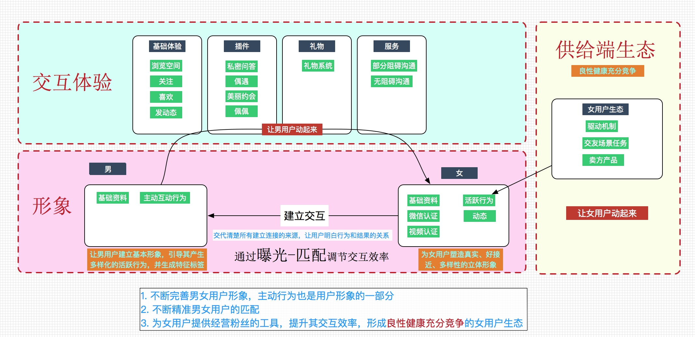
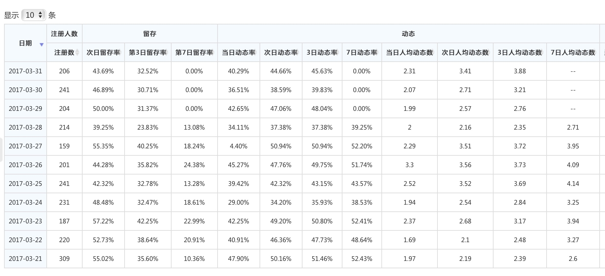
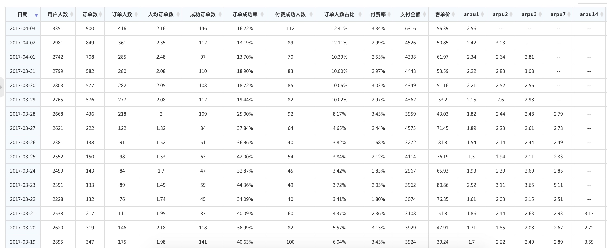
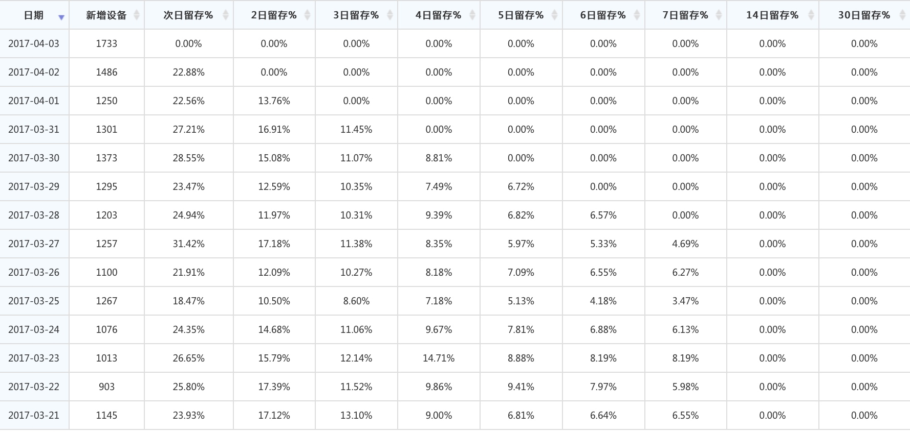
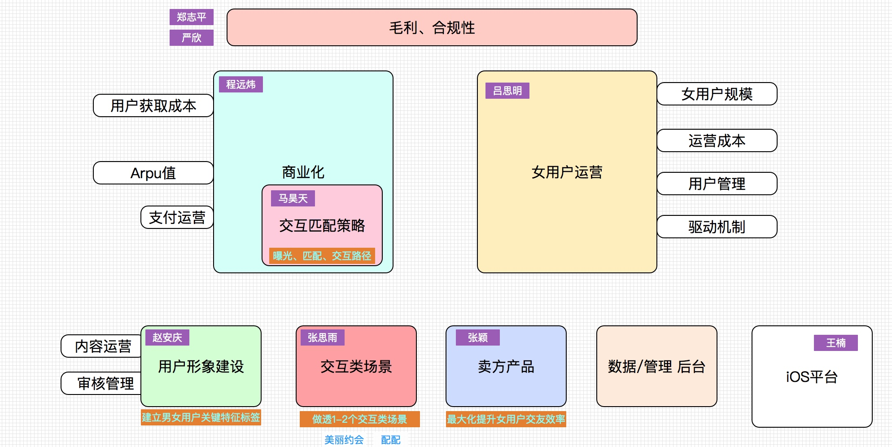

目标
长期目标
持续研发和运营满足用户和市场需求的婚恋交友产品
中期目标
- 通过生态运转建立新产品市场竞争能力（如：提升K值等）；
- 进一步优化组织和流程，为未来多产品和多平台做好准备：
- 加强团队人员的思想教育，提升团队战斗力（已完成）；
短期目标
- 第一个里程碑：K值（包括成本）追平多名称（4月15日前）；
- 第二个里程碑：K值能超过30%（6月15日前），同时IOS版本追平AD版本。
阶段里程碑
- 3月17日，arpu1 = 1.7， K = 2.2
- 3月31日，arpu1 = 2.5，K = 3.2
- 4月15日 arpu1 = 2.8 ， K = 3.6
业务思路
业务发展的方向：
用户形象建设
目标：特征标签的建设，更好的塑造用户鲜明的形象。
415过后，会调张安庆来专门负责用户形象的工作。
女用户运营
目标：建立女用户良性健康充分竞争的交友环境，旨在为女用户更有效率的筛选潜在交友对象。
交互场景深化
目标：通过互动插件把女用户真实交友属性的活跃行为输出到未付费用户。
415阶段过后，会着手做深做透两个组件，为多产品做准备。
交互匹配策略（暗主线引导）
目标：通过用户标签做男女双方的匹配，提升男女用户两侧的交友效率。
415后，会通过一个月时间，将主线脉络梳理清楚，通过引导用户的主动行为完成交互信的触发。

业务进展
415阶段临近，当期主要围绕以下几件事进行后续的安排：
- 支付低门槛合规化应用
- B类女用户运营的提升效率
- 降成本工作
- 今日头条放量准备。
- 运维性能的进一步加强
- iOS 版本4月底将彻底追平AD版本
头条测试情况
严格AB测试
154278 拍拖 154123 多名称； 使用的是头条普通流量154053，今天凌晨切换成使用头条的好流量，没有AB对比
154052是最早投放的cpd 普通流量 没有ab对比
自然女用户留存情况 （目标： 7日留存 12%）
自然女这几天数据有波动，正在追查原因中。

K值情况 （目标：3.6）
由于应用宝自身的流量运营处于调整阶段，流量的不稳定导致获取成本和arpu波动都比较大，从arpu值的情况分析，由于前期的策略较多名称会轻不少（包括友缘底包），在arpu1上追赶貌似比较困难，但后续arpu的增长当前情况看起来势头还不错。

男用户次日留存
目前男用户的次日留存在以前的基础上有所上升，但波动明显，还在观察后续的效果。

组织进展
优化组织和流程，为未来多产品和多平台做好准备
- 『星火计划』骨干人员已经在当前的工作任务中承担了很重要的责任以马昊天、张丝雨、房园为代表的年轻人不但承担了较为明确的目标，工作积极性很高，据我观察，大家不是到了晚9点，就立马下班，经常是工作到晚11点左右；
- 吕思明、赵安庆、张颖、程远炜 在各自的任务分配上做的较为出色，这块我和刘博需要找一下自身是问题，怎么改变大家主观上对某些人员的定性判断。
- 围绕核心人员的队伍重建工作也在进行之中，招人进展初步比较顺利。
- 王楠着手iOS平台移植，为多平台移植积累经验。 张海娟由于迟迟不能融入新产品部门中，已经安排到营销中心轮岗。
- 着手建立开发三部的人员梯队，引导新年建立组织意识，逐步建立起『业务骨干+技术骨干』共同负责业务目标的机制；
